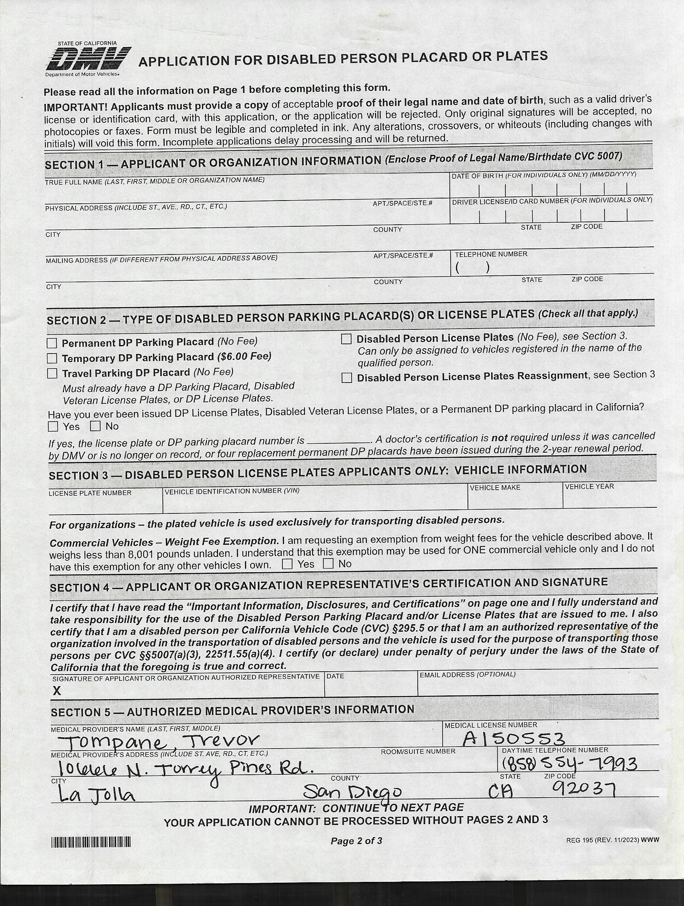
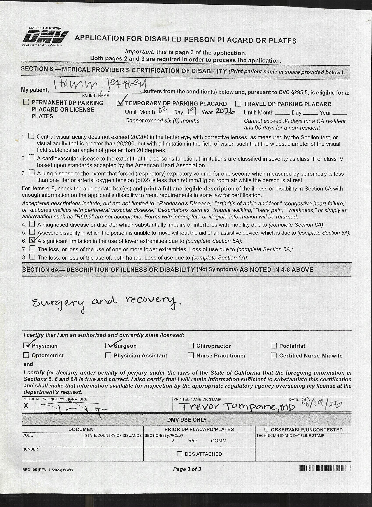

📅 Timeline for Jeff's Recovery
- Surgery Date: September 12, 2025
- Recovery Period: 6-12 weeks minimum
- Mobility Restrictions: Walker/crutches for several weeks
- Recommended Filing: Before surgery or immediately after
📋 From Surgery Support Schedule
Task: "Fill out DMV form for handicapped placard" - listed as 7 days before surgery
Purpose: Temporary placard for recovery period to allow parking closer to destinations
Required Forms
📄 DMV Handicapped Placard Form - Page 1
File: dmv-handicap-placard-page1.jpg
This page contains the main application form that Jeff needs to complete with personal information.
 View Full Size Page 1📄 DMV Handicapped Placard Form - Page 2
File: dmv-handicap-placard-page2.jpg
This page contains additional information and possibly the physician certification section.
 View Full Size Page 2Filing Process Checklist
1. Patient Information Section
Jeff completes personal information, address, and contact details on the form
2. Physician Certification
Dr. Jeffrey Wilde or appropriate medical professional completes the medical certification section
Contact: (858) 554-7993
3. Submit to DMV
Submit completed form to California DMV according to their submission guidelines
4. Receive Temporary Placard
Use temporary placard during recovery period for closer parking access
Recovery Parking Needs
Why This Matters for Jeff's Recovery
- Limited Walking: Hip replacement requires limited weight-bearing initially
- Walker/Crutches: Mobility aids make longer distances challenging
- Medical Appointments: Multiple follow-up visits to Scripps Clinic
- Physical Therapy: Regular PT appointments at Luna PT
- Grocery/Errands: Essential activities during recovery